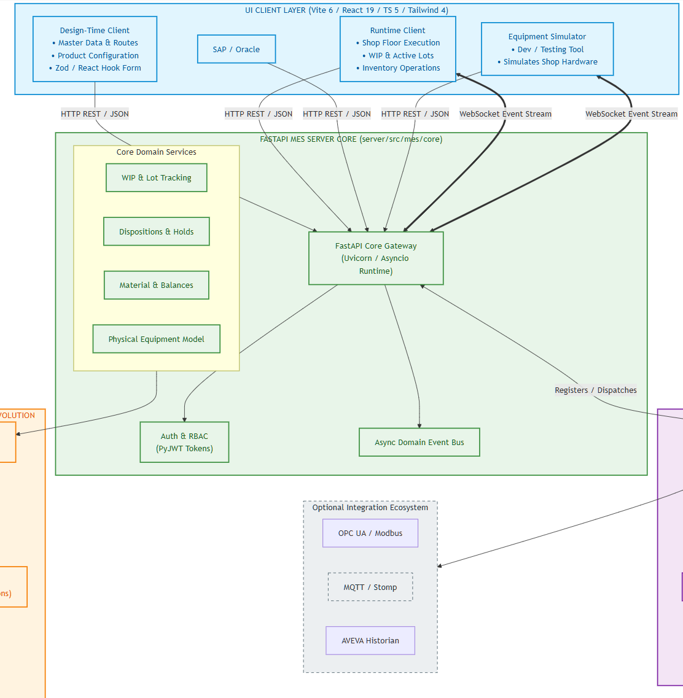
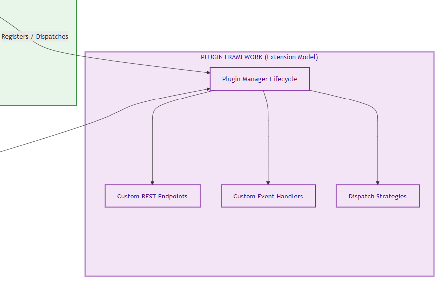
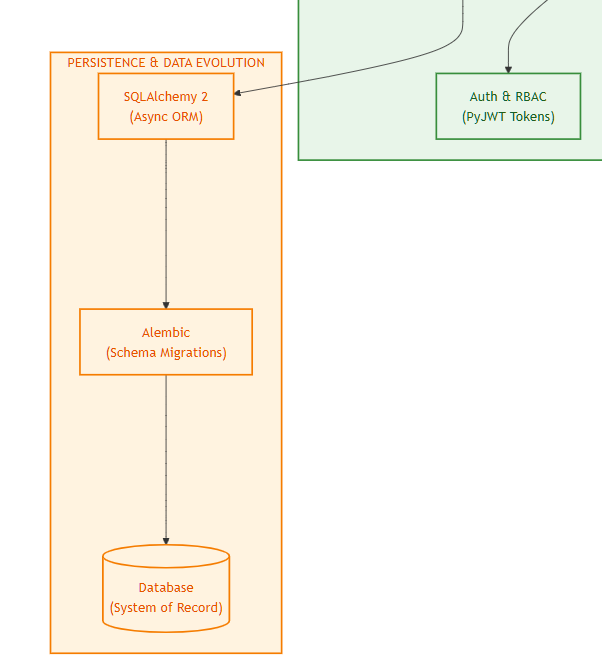

Introduction
MES AI is an open-source Manufacturing Execution System framework for teams that want to tailor MES workflows, integrations, and user experiences to their own operations. Instead of adapting your business to a fixed vendor product, MES AI provides a foundation you can extend with your own domain logic, plugins, and AI-assisted engineering workflows.
- Reduced dependence on vendor licensing and proprietary roadmaps
- Adaptable workflows and integrations specific to your plant and business processes
- AI-assisted development and testing to accelerate delivery
- Greater control over release timing, feature priorities, and operational data
To download the source code, click the View on GitHub button above, then open the Code dropdown and select Download ZIP.
Click on the Download User Guide button above, then follow the installation instructions.
System at a Glance
At the center of the system is the MES server under server/src/mes, which exposes a versioned REST API and WebSocket event stream. Around that core are several browser-based applications in clients/ that support different user roles and development workflows:
Design-Time Client
Configure products, routes, dispositions, equipment, plugins, and other master data.
Runtime Client
Create and process WIP, dispatch work, record inventory activity, and handle shop-floor execution.
ERP Simulator
Exercise inbound planning and order-release scenarios without requiring a real ERP connection.
Equipment Simulator
Mimic equipment interactions in development environments for fast feedback on equipment-facing workflows.
High-Level Architecture
The architecture follows a client-server model with clear separation between core execution logic, user interfaces, and integration points.
- The FastAPI MES server owns the domain model, persistence, business rules, API surface, and event publication.
- The Vite applications provide focused user experiences for engineering, operations, and simulation.
- Plugins extend the platform without requiring direct modification of the core.
- PostgreSQL, SQL Server, and Oracle databases are supported via SQLAlchemy and Alembic.

Figure 1 — Clients and MES server architecture

Figure 2 — Plugin architecture

Figure 3 — Backend architecture
FastAPI MES Server
The MES server is the core of the platform, implemented with FastAPI and organized into domain-focused modules under server/src/mes/core. These modules cover operations requests, WIP, dispatch, material management, physical model, product definition, performance, authentication, and plugins.
Key responsibilities include:
- Exposing REST endpoints for configuration, execution, inventory, dispatch, and reporting workflows.
- Managing lots, units, operations requests, material lots, inventory balances, and equipment state.
- Publishing domain events through an internal async event bus and surfacing selected events to clients over WebSocket.
- Running plugin lifecycle management so built-in and user plugins can register routes, event handlers, and integration behavior.
- Enforcing authentication and role-based access control across both API and UI-backed workflows.
Extension Model
One of the defining architectural choices in MES AI is the plugin model. Rather than treating integrations and custom workflows as hard-coded special cases, the system uses a plugin framework that can load built-in and user-defined plugins. Plugins can contribute REST endpoints, event handlers, equipment behavior, dispatch strategies, and other extension logic.
This matters because manufacturing implementations are rarely identical. Site-specific behavior, ERP mappings, equipment protocols, and workflow rules can be introduced through plugins while the core platform stays stable.
Technology Stack
Backend
Frontend
Quality & Tooling
Development Approach
MES AI was developed as an experiment in AI-assisted software delivery for industrial applications. The goal was to create a free and open-source MES framework that could be extended by end users with the help of modern coding agents and standard developer tools.
The implementation was built iteratively: expected MES capabilities were researched first, the architecture and technology stack were selected to support extensibility, and features were added in reviewable steps with human feedback guiding scope and direction.
AI-assisted testing was part of that process from the beginning. The project includes broad server-side unit test coverage along with end-to-end SQA coverage for key design-time and runtime workflows.
Please send any comments or suggestions to point85.apps@gmail.com.